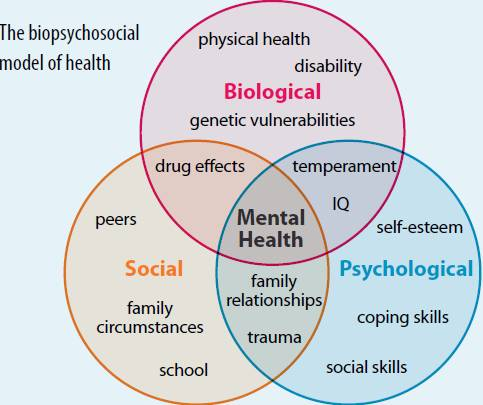
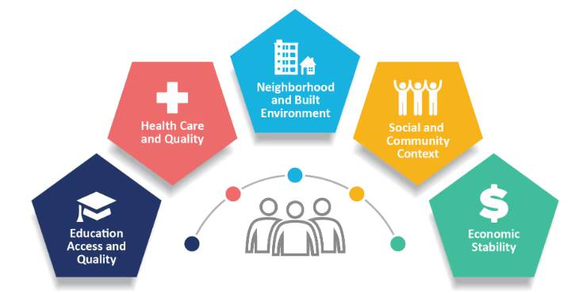

Naturopathic Principles
Physicians fall into three major categories: Medical Doctors (MDs), Doctors
of Osteopathic Medicine (DOs), and Naturopathic Medical Doctors (NMDs).
MDs focus on conventional Western medicine, primarily diagnosing and treating symptoms through a
biomedical model with an emphasis on pharmaceuticals and surgery. DOs share much of this approach but
add an emphasis on the body’s musculoskeletal structure and how it relates to health, often
incorporating osteopathic manipulative treatment as a part of care. NMDs, meanwhile, operate with
distinct guiding principles that prioritize natural healing processes,
prevention, and whole-person care. While each category of physician may focus on different
aspects of care, all are dedicated to improving patient health, but they each apply different
philosophical frameworks and methods to achieve this goal.
The naturopathic principles that guide Naturopathic Medical Doctors (NMDs) emphasize a holistic approach
to health and wellness, focusing on treating the whole person, addressing root causes, and supporting
the body’s inherent healing abilities. These guiding principles—such as “First, Do No Harm,” the
“Healing Power of Nature” (vis medicatrix naturae), and treating the underlying causes of illness—reflect a commitment to understanding and enhancing each individual’s
health. NMDs also prioritize educating patients, preventing disease, and encouraging
long-term well-being by integrating physical, mental, and environmental factors. These naturopathic
principles define the unique approach of NMDs, providing a foundation for their practice that sets them
apart from MDs and DOs, yet complements the broader medical community in a shared commitment to
patient-centered care.
The biopsychosocial model is an integrative approach to understanding health and illness by considering the
complex interplay between
biological,
psychological, and
social factors.
1. Biological Factors
This aspect includes genetic predispositions, physiological processes, and physical health conditions that can
influence a person’s well-being.
For example, chronic diseases, neurological functions, and hormonal imbalances are all biological elements that
affect health.
2. Psychological Factors
These encompass emotional and cognitive aspects such as mental health, coping mechanisms, personality traits,
and attitudes toward health.
Psychological factors can affect how individuals perceive their health, how they manage stress, and how they
respond to treatment.
3. Social Factors
This component looks at the influence of social environments and relationships on health.
Factors such as socioeconomic status, culture, family dynamics, and social support networks play a crucial role
in an individual’s health outcomes and access to care.
By integrating these three dimensions, the biopsychosocial model provides a more holistic understanding of
health, recognizing that
effective treatment and care must address not just the physical symptoms of a
condition,
but also the psychological and social contexts that influence a person’s health experience.
This model encourages healthcare providers to adopt a
comprehensive view when diagnosing and treating patients, ultimately leading to
more personalized and effective care.

Social Determinants of Health
Social determinants of health (SDOH) refer to the various social, economic, and environmental factors that
significantly influence individual and community health outcomes. These determinants
shape a person’s living conditions, lifestyle choices, and access to resources,
thereby impacting their overall health and well-being. Key categories of social determinants include:
1. Economic Stability: Factors such as income level, employment status, and financial security
play a crucial role in determining access to healthcare, nutritious food, and safe housing. Economic hardship can
lead to stress and limit opportunities for a healthy lifestyle.
2. Education: Educational attainment and access to quality education influence health literacy
and inform individuals about health risks and behaviors. Higher levels of education are generally associated with
better health outcomes and increased opportunities for employment.
3. Social and Community Context: This includes social support networks, community engagement,
and the presence of social norms. Strong social ties and community involvement can promote health and well-being,
while social isolation can lead to negative health outcomes.
4. Health and Healthcare Access: Availability and accessibility of healthcare services,
insurance coverage, and quality of care are critical for maintaining health. Barriers to healthcare can prevent
individuals from seeking necessary medical attention or preventive care.
5. Neighborhood and Built Environment: The physical environment, including housing quality,
access to recreational spaces, air and water quality, and transportation options, affects health outcomes. Living
in a safe and supportive neighborhood can enhance health, while poor environmental conditions can lead to health
risks.
Understanding social determinants of health is essential for developing effective public health strategies and
policies, as they highlight the systemic factors that contribute to health disparities among different
populations. Addressing these determinants can lead to more equitable health outcomes and improved overall
community health.

In today’s complex healthcare landscape, understanding the multifaceted nature of health is essential for
delivering effective and holistic care. Integrating diverse frameworks such as naturopathic principles,
social determinants of health (SDOH), and the biopsychosocial model offers a comprehensive
approach that addresses the myriad factors influencing individual well-being.
Naturopathic medicine emphasizes natural healing and the body’s intrinsic ability to
recover, while SDOH highlight the social and economic conditions that shape health outcomes.
Meanwhile, the biopsychosocial model provides a nuanced understanding of how
biological, psychological, and social factors interconnect to affect health.
By exploring the relationships among these three approaches, we can foster a more inclusive and effective
healthcare paradigm that not only treats illness but also promotes overall wellness and health equity.
Similarities
- 1. Holistic Perspective:All three frameworks emphasize a comprehensive understanding of
health. Naturopathic principles focus on treating the whole person, SDOH acknowledge the broader context
affecting health, and the biopsychosocial model integrates biological, psychological, and social dimensions.
- 2. Interconnectedness:Each approach recognizes that health is influenced by multiple factors.
Naturopathic medicine considers physical, emotional, and environmental aspects, SDOH highlight the impact of
socioeconomic and community factors, and the biopsychosocial model emphasizes the interplay between biological,
psychological, and social influences.
- 3. Preventive Focus: Naturopathy prioritizes prevention and wellness, SDOH aim to address
factors that can prevent health issues, and the biopsychosocial model encourages proactive interventions that
consider all aspects of a person’s life.
Differences
- 1. Foundational Emphasis: Naturopathic principles are rooted in natural healing modalities,
emphasizing the body’s inherent ability to heal itself. SDOH focus more on external factors like socioeconomic
conditions and community resources, while the biopsychosocial model centers on understanding individual health
through a multi-dimensional lens.
- 2. Scope of Influence: Naturopathic principles are often applied through clinical practices
that utilize natural therapies, while SDOH inform public health policies and interventions. The biopsychosocial
model is widely used in clinical psychology and medicine to frame patient assessments and treatment plans.
- 3. Cultural and Social Context: SDOH are deeply embedded in societal structures and cultural
contexts, highlighting disparities and inequalities, whereas the biopsychosocial model focuses on individual
experiences and interactions within their biological and psychological realms.
Integrating All Three Approaches
Integrating naturopathic principles, social determinants of health, and the biopsychosocial model creates a
comprehensive approach to healthcare that addresses the multifaceted nature of health. This integration has
several benefits:
- Comprehensive Patient Care: By considering natural healing methods alongside social and
psychological factors, practitioners can provide a more thorough understanding of a patient’s health status and
needs. This helps in formulating personalized treatment plans that encompass physical, emotional, and social
well-being.
- Addressing Health Disparities: Integrating SDOH with the biopsychosocial model enables
healthcare providers to identify and address systemic barriers affecting patients. This leads to more equitable
health outcomes, particularly for marginalized populations.
- Promoting Preventive Health: By emphasizing prevention through naturopathic principles and
acknowledging the broader social influences on health, practitioners can encourage healthier lifestyles and
community support systems, ultimately reducing the incidence of disease.
- Holistic Health Promotion: Combining these approaches fosters an environment where patients
are seen as whole individuals within their unique contexts. This promotes empowerment, encouraging patients to
take an active role in their health decisions and fostering resilience.
In summary, the integration of naturopathic principles, social determinants of health, and the biopsychosocial
model offers a robust framework for understanding and addressing health in a way that is holistic,
patient-centered, and socially responsible. This comprehensive approach enhances the effectiveness of healthcare
delivery and promotes healthier communities.